<!doctype html>
<html lang="en">
<head>
  <meta charset="utf-8">
  <meta name="viewport" content="width=device-width, initial-scale=1">
  <title>arxiv digest — 2026-09-30</title>
  <style>
:root {
  --bg: #ffffff;
  --fg: #1f2328;
  --muted: #59636e;
  --border: #d0d7de;
  --card: #f6f8fa;
  --link: #0969da;
}
body {
  max-width: 980px;
  margin: 0 auto;
  padding: 2rem 1rem 5rem;
  font-family: -apple-system, BlinkMacSystemFont, "Segoe UI", Helvetica, Arial, sans-serif;
  line-height: 1.55;
  color: var(--fg);
  background: var(--bg);
}
a { color: var(--link); }
img { max-width: 100%; height: auto; }
pre, code { background: var(--card); border-radius: 6px; }
pre { padding: 1rem; overflow-x: auto; }
blockquote { border-left: 4px solid var(--border); padding-left: 1rem; color: var(--muted); }
details { margin: 0.6rem 0; }
summary { cursor: pointer; font-weight: 600; }
.paper-figures-scroll {
  display: flex;
  gap: 1rem;
  overflow-x: auto;
  overscroll-behavior-x: contain;
  padding: 0.75rem 0.25rem 1rem;
  margin: 1rem 0 1.25rem;
  border-top: 1px solid var(--border);
  border-bottom: 1px solid var(--border);
  scroll-snap-type: x proximity;
}
.paper-figure-card {
  flex: 0 0 min(260px, 72vw);
  scroll-snap-align: start;
  background: var(--card);
  border: 1px solid var(--border);
  border-radius: 12px;
  padding: 0.55rem;
}
.paper-figure-card img {
  display: block;
  width: 100%;
  max-height: 240px;
  object-fit: contain;
  background: white;
  border-radius: 8px;
}
.paper-figure-caption {
  display: block;
  margin-top: 0.5rem;
  color: var(--muted);
  font-size: 0.85rem;
}
.figure-strip-hint {
  color: var(--muted);
  font-size: 0.9rem;
  margin-bottom: -0.3rem;
}
</style>
  <!-- MathJax: renders $...$ inline math and $$...$$ display math, plus
       \(...\) and \[...\]. Loaded from the official CDN; works offline
       once cached. Configured to skip code/pre blocks so arxiv IDs that
       look like dollar amounts don't get mangled. -->
  <script>
    window.MathJax = {
      tex: {
        inlineMath: [['$', '$'], ['\\(', '\\)']],
        displayMath: [['$$', '$$'], ['\\[', '\\]']],
        processEscapes: true,
        processEnvironments: true
      },
      options: {
        skipHtmlTags: ['script', 'noscript', 'style', 'textarea', 'pre', 'code'],
        ignoreHtmlClass: 'tex2jax_ignore',
        processHtmlClass: 'tex2jax_process'
      }
    };
  </script>
  <script id="MathJax-script" async
    src="https://cdn.jsdelivr.net/npm/mathjax@3/es5/tex-chtml.js"></script>
</head>
<body>
<header style="background-color: #333; color: white; padding: 15px; margin-bottom: 20px;">
  <h1 style="margin: 0; font-size: 24px;">
    <a href="https://ochelpan.github.io/arXiv_clean/" style="color: white; text-decoration: none;">Main</a>
  </h1>
</header>

<h1>Daily arXiv Report</h1>

<hr>
<p>
<a href="index.html">← Index</a>
 · <a href="papers_12.html">← Previous</a>
</p>
<hr>

<h2>Papers 241–247</h2>
<p><a id="paper-2609.32644"></a></p>
<h3 id="finite-temperature-phase-transitions-across-spin-symmetries-in-two-dimensional-magnets"><a href="http://arxiv.org/abs/2609.32644v1">Finite-temperature phase transitions across spin symmetries in two-dimensional magnets</a></h3>
<p><strong>Authors:</strong> Chen Chen, Moritz A. Goerzen, Megha Arya, Lionel Calmels, Yongping Du, Dongzhe Li<br>
<strong>Type:</strong> theory · <strong>Category:</strong> statistical mechanics · <strong>PDF:</strong> <a href="https://arxiv.org/pdf/2609.32644v1">https://arxiv.org/pdf/2609.32644v1</a><br>
<strong>Analysis basis:</strong> full PDF text, analyzed in chunks</p>
<div class="figure-strip-hint">↔ Scroll figures horizontally</div>
<div class="paper-figures-scroll">
<figure class="paper-figure-card">
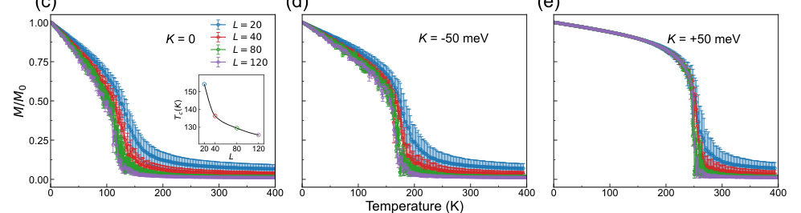
<figcaption class="paper-figure-caption"><b>Fig 1.</b> Fig. 1. (a) Symmetry limits of the 2D anisotropic Heisenberg model as a function of the magnetocrystalline anisotropy K. The limits K →−∞, K = 0, and K →+∞correspond to the XY model with U(1) symmetry, with spins confined to the plane, the isotropic Heisenberg model with O(3) symmetry, with unrestricted spin orientations, and the Ising model with Z2 symmetry, with spins restricted to two opposite orientations, respectively. (b) Temperature dependence of the normalized magnetization M/M0, with M0 = M(0), for representative anisotropy values on a lattice with 40×40 sites, for three representative values of K. The deviation between the curves illustrates the anisotropy-mediated deviations from...</figcaption>
</figure>
<figure class="paper-figure-card">
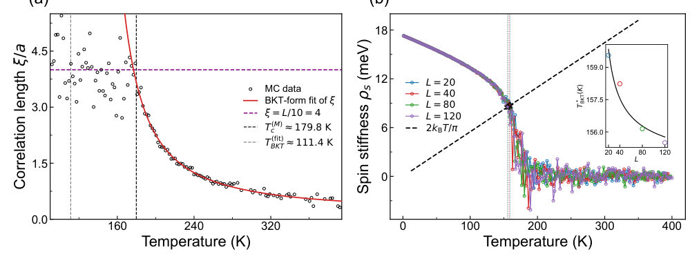
<figcaption class="paper-figure-caption"><b>Fig 2.</b> Fig. 2. Correlation-length and spin stiffness signatures in the easy-plane regime. (a) Temperature dependence of the in-plane correlation length ξ/a for K = −50 meV. The red solid line shows the fit by Eq. (3) in the high-temperature regime, which diverges at TBKT (light grey dashed line). The black vertical dashed line indicates T (M) c ≃179.8 K obtained from the magnetization M(T). The purple horizontal dashed line denotes ξ = L/10, indicating that the magnetization transition is associated with a correlation length comparable to the system size. (b) Area-normalized spin stiffness ρs for different system sizes L. The black dashed line denotes the universal-jump criterion 2kBT/π, and the...</figcaption>
</figure>
<figure class="paper-figure-card">
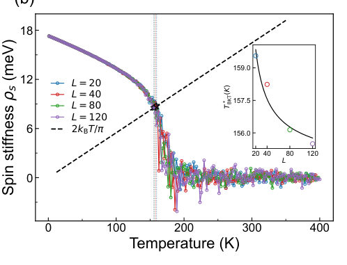
<figcaption class="paper-figure-caption"><b>Fig 3.</b> Fig. 1(b), where the temperature-dependent magnetization</figcaption>
</figure>
<figure class="paper-figure-card">
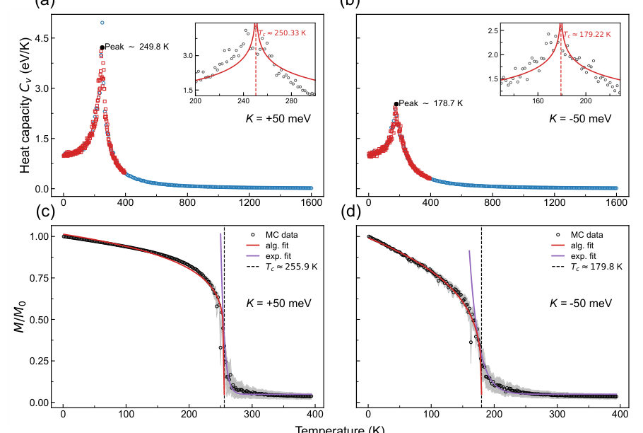
<figcaption class="paper-figure-caption"><b>Fig 4.</b> Fig. 3. Determination of the critical temperature from heat-capacity and magnetization analyses. (a-b) Heat capacity CV as a function of temperature for K = +50 meV and K = −50 meV, respectively. Insets show fits by the power law in Eq. (9) to the peak region used to extract the critical temperature. (c-d) Corresponding temperature dependence of the normalized magnetization M(T)/M0. The low- temperature regime is fitted using an algebraic function, whereas the high-temperature regime is described by an exponential function. The resulting fits (red lines) provide an estimate of the critical temperature obtained from the magnetization. The critical temperatures extracted from the two...</figcaption>
</figure>
<figure class="paper-figure-card">
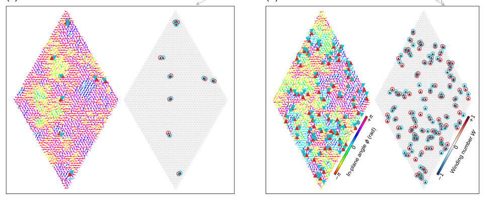
<figcaption class="paper-figure-caption"><b>Fig 5.</b> Fig. 4. Vortex excitations in the easy-plane regime for K = −50 meV in a 40×40×1 triangular lattice. (a) Schematics of spin configurations of a bound vortex-antivortex pair (left) and an isolated vortex and antivortex (right). The color bar indicates the winding number ν = 1 (red) and ν = −1 (cyan). (b) Temperature dependence of the normalized magnetization M/M0 (black, left Y -axis) and vortex number Nv (red, right Y -axis). Two representative temperatures, T = 149 K (c) and T = 190 K (d), are selected. At each temperature, the spin texture is projected onto the xy plane and colored according to the azimuthal angle ϕ, together with the corresponding vortex distribution.</figcaption>
</figure>
</div>
<p><strong>Summary.</strong> This work investigates phase transitions in 2D magnets by simulating the Heisenberg model across varying magnetic anisotropies. The authors find that while BKT theory predicts certain critical temperatures in the easy-plane regime, the actual behavior is dominated by the interplay between finite-size effects and the nucleation of vortex-antivortex pairs. This clarifies how experimental temperature scales depend on magnetic anisotropy and system size.</p>
<p><strong>Why it may be interesting.</strong> The study provides a detailed, quantitative framework for understanding how finite-size effects and specific physical mechanisms (like vortex proliferation) modify universal critical behavior predicted by continuum theories (like BKT), which is crucial for interpreting experimental measurements in nanoscale magnets.</p>
<details>
<summary>Detailed structure</summary>
<p><strong>Main problem.</strong> To achieve a unified understanding of finite-temperature phase transitions across different spin-symmetry classes in two-dimensional (2D) magnets.</p>
<p><strong>Main result.</strong> The characteristic temperature in finite easy-plane Heisenberg magnets is governed by the interplay between finite-size spin correlations and vortex-antivortex pair proliferation, deviating from pure BKT theory predictions.</p>
<p><strong>Method.</strong> Large-scale Monte Carlo (MC) simulations using the Metropolis algorithm to study the classical 2D Heisenberg model across varying magnetic anisotropy.</p>
<p><strong>Model / system.</strong> The classical 2D Heisenberg model on a triangular lattice, described by a Hamiltonian interpolating between easy-plane (U(1)), isotropic (O(3)), and easy-axis (Z2) symmetries via the magnetocrystalline anisotropy parameter K.</p>
<p><strong>Key observables.</strong> Normalized magnetization (M/M0), in-plane correlation length ($\xi/a$), spin stiffness ($
ho_s$), and characteristic temperatures ($T_c$) derived from heat capacity and magnetization.</p>
<p><strong>Important parameters / regimes.</strong> The anisotropy parameter K, which controls the spin symmetry; finite system size effects; and the Berezinskii-Kosterlitz-Thouless (BKT) transition physics.</p>
<p><strong>Assumptions / limitations.</strong> The Dzyaloshinskii-Moriya interaction is neglected; the analysis focuses on the interplay between finite-size effects and vortex proliferation mechanisms.</p>
<p><strong>Figures summary.</strong> Figures illustrate the temperature dependence of magnetization across different anisotropy regimes (K), and compare characteristic temperatures derived from magnetization, heat capacity, and BKT fits in the easy-plane regime.</p>
<p><strong>Paper structure.</strong> The paper systematically investigates the Hamiltonian across its symmetry limits (K=0, K&lt;0, K&gt;0), using MC simulations to calculate various thermodynamic observables and comparing the results against established theories like BKT physics.</p>
</details>
<details>
<summary>Abstract</summary>
<p>Recent advances in intrinsic two-dimensional (2D) magnets have created a need for a unified understanding of finite-temperature phase transitions across different spin-symmetry classes. Here, we investigate finite-temperature magnetism in the classical 2D Heisenberg model using large-scale Monte Carlo simulations, continuously spanning the easy-plane, isotropic, and easy-axis regimes. We find that characteristic temperatures are strongly affected by the interplay of finite-size effects and spin symmetry, induced by magnetocrystalline anisotropy, being most pronounced in the isotropic Heisenberg regime and substantially reduced toward the easy-plane and easy-axis limits. Examining Berezinskii--Kosterlitz--Thouless (BKT) physics in the easy-plane regime, we find that the characteristic temperatures independently estimated from the magnetization and heat capacity deviate significantly from those proposed by BKT theory, but match a previously reported anomaly in the XY-model. We report that characteristic temperatures instead are correlated with the proliferation of vortex-antivortex pairs, suggesting the gain in entropy by their accelerated nucleation as the origin of the anomaly. Establishing this connection both theoretically and numerically, we argue that the thermodynamic characteristic temperature in finite easy-plane Heisenberg magnets, including the deviation from BKT theory, is subject to the interplay between finite-size spin correlations and vortex proliferation. These results clarify how experimental and technologically relevant temperature scales evolve with magnetic anisotropy, spin symmetry, and system size in finite 2D magnets.</p>
</details>
<p><sub><a href="#top">↑ back to top</a></sub></p>

<p><a id="paper-2609.32122"></a></p>
<h3 id="in-memory-am-demodulation-using-an-all-silicon-independent-dual-gate-gain-cell-memory-with-math2333math-a-leakage-determined-by-single-electron-counting"><a href="http://arxiv.org/abs/2609.32122v1">In-Memory AM Demodulation Using an All-Silicon Independent-Dual-Gate Gain-Cell Memory with $<10^{-22}$ A Leakage Determined by Single-Electron Counting</a></h3>
<p><strong>Authors:</strong> Katsuhiko Nishiguchi, Toshiaki Hayashi, Kensaku Chida, Takase Shimizu, Gento Yamahata, Seiya Kasai<br>
<strong>Type:</strong> experiment · <strong>Category:</strong> other · <strong>PDF:</strong> <a href="https://arxiv.org/pdf/2609.32122v1">https://arxiv.org/pdf/2609.32122v1</a><br>
<strong>Analysis basis:</strong> full PDF text, analyzed in chunks</p>
<div class="figure-strip-hint">↔ Scroll figures horizontally</div>
<div class="paper-figures-scroll">
<figure class="paper-figure-card">
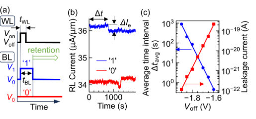
<figcaption class="paper-figure-caption"><b>Fig 1.</b> Fig. 3. (a) Timing sequence for writing ‘1’ and ‘0’ and evaluating retention. Von, V1, and V0 were 0.2, 1, and 0 V, respectively. tWL and tBL were 20 and 40 ns, respectively. (b) Retention characteristics measured via the RL current. Voff was -1.9 V. ∆Ie denotes the current change associated with a single electron entering the SN, and the corresponding time interval is defined as ∆t. (c) Measured average time interval ∆tavg for one electron entering the SN as a function of Voff . The symbols are experimental data, and the solid lines are exponential fits to them. ∆tavg is obtained by averaging ∆t from 100 repeated writings of data ‘1’. Leakage current given by e/∆tavg is also shown on the...</figcaption>
</figure>
<figure class="paper-figure-card">
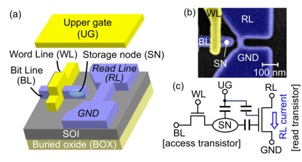
<figcaption class="paper-figure-caption"><b>Fig 2.</b> Fig. 1. (a) Bird’s-eye view and (b) false-color SEM image of the device fabricated on a silicon-on-insulator (SOI) wafer. The word line (WL) and upper gate (UG) are made of poly-Si. After the fabrication step shown in (b), the device is oxidized. The gate-oxide thickness between the SOI channel and WL is about 40 nm. The entire area shown in (b) is covered by a 50-nm-thick interlayer SiO2 formed by a chemical vapor deposition, followed by the UG . After its formation, phosphorus ions are implanted into the SOI channel to form terminals connected to the bit line (BL), read line (RL), and ground (GND). The thickness and width of a silicon-on-insulator channel are 10 nm each. The gate length...</figcaption>
</figure>
<figure class="paper-figure-card">
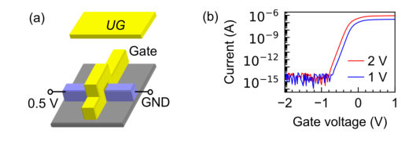
<figcaption class="paper-figure-caption"><b>Fig 3.</b> Fig. 2. Characterization of a reference transistor with the same channel and gate geometry as the access transistor comprising the iDGCM. (a) Schematic of the reference transistor. (b) Its measured transfer characteristics at UG voltages of 1 and 2 V. The current below 10−14 A reflects the measurement noise floor of the system.</figcaption>
</figure>
<figure class="paper-figure-card">

<figcaption class="paper-figure-caption"><b>Fig 4.</b> Figure 3 shows the retention characteristics of the iDGCM after data ’1’ and ’0’ were stored. Data ‘1’ remains clearly separated from data ‘0’ even after 1000 s [see Fig. 3(b)]. A downward step ∆Ie after a time interval of ∆t directly reflects a single-electron leakage from the BL to the SN [14]: The leakage current is estimated from e/∆tavg, where e is the elementary charge, and ∆tavg is the average value of ∆t obtained from repeated writings of data ’1’. As shown in Fig. 3(c), the leakage current exhibits a subthreshold exponential dependence on the WL voltage Voff, falling below 10−22 A and</figcaption>
</figure>
<figure class="paper-figure-card">
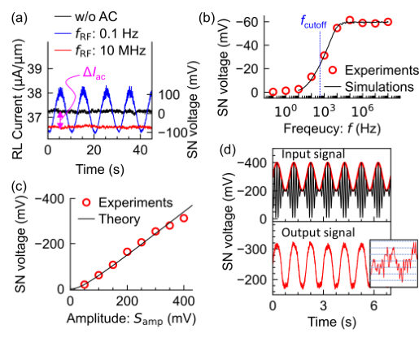
<figcaption class="paper-figure-caption"><b>Fig 5.</b> Fig. 4. (a) AC-to-DC conversion. A sinusoidal signal, Sampsin(2πft), is superimposed on the BL. The measured RL currents with and without the AC signal are compared (left axis). Samp was 100 mV. In (a)-(c), the WL voltage was -1.3 V. The right axis is the corresponding SN voltage converted from the measured RL current using e∆Iac/C∆Ie. ∆Iac and ∆Ie are the changes in the RL current caused by the AC signal and by one electron entering the SN [see Fig. 3(b)], respectively. C of 7.7 aF is the experimentally estimated capacitance of the SN. (b) The SN voltage as a function of frequency f of the AC signal. Samp was 100 mV. The symbols are experimental data converted from the measured RL current,...</figcaption>
</figure>
</div>
<p><strong>Summary.</strong> This paper presents an all-silicon, ultra-low-leakage memory device capable of in-memory signal processing. By achieving leakage currents below $10^{-22}$ A, the device enables the exploitation of transistor nonlinearity to perform Amplitude-Modulation (AM) demodulation directly within the memory array. This offers a highly energy-efficient, CMOS-compatible platform for advanced sensing and signal processing.</p>
<p><strong>Why it may be interesting.</strong> While the physics is solid-state device physics, the concept of using fundamental electronic nonlinearities (subthreshold behavior) for signal processing in memory is relevant to energy-efficient quantum computing architectures that seek to integrate computation and storage.</p>
<details>
<summary>Detailed structure</summary>
<p><strong>Main problem.</strong> The primary goal is to develop ultra-low-leakage memories suitable for performing in-memory Amplitude-Modulation (AM) demodulation, thereby reducing the need for external analog circuitry.</p>
<p><strong>Main result.</strong> The proposed all-silicon independent-dual-gate memory achieved leakage currents below $10^{-22}$ A, enabling long retention and allowing the exploitation of subthreshold nonlinearity for successful AM envelope detection.</p>
<p><strong>Method.</strong> The authors measured leakage current using single-electron counting statistics and demonstrated AM demodulation by applying an AC signal and measuring the resulting time-averaged Signal-to-Noise (SN) voltage.</p>
<p><strong>Model / system.</strong> The system is an all-silicon independent-dual-gate memory (iDGCM) fabricated on SOI, which uses an intrinsic Si channel controlled by two gates to suppress leakage paths.</p>
<p><strong>Key observables.</strong> Leakage current ($< 10^{-22}$ A), retention time ($> 1000$ s), Signal-to-Noise (SN) voltage dependence on input amplitude ($S_{amp}$), and the output envelope of the AM signal.</p>
<p><strong>Important parameters / regimes.</strong> Leakage current ($< 10^{-22}$ A), retention time ($> 1000$ s), and the frequency relationship required for demodulation ($f_{mod} \ll f_{cutoff} \ll f_{carrier} - f_{mod}$).</p>
<p><strong>Assumptions / limitations.</strong> The leakage current measurement is an inference from single-electron counting statistics, and the analysis assumes the coupling between the Word Line and Upper Gate does not limit charge transfer in the relevant frequency range.</p>
<p><strong>Figures summary.</strong> Figures illustrate the device structure, leakage characterization via single-electron counting, and the core demonstration: AC-to-DC conversion showing the frequency dependence of the SN voltage and the successful recovery of the AM signal envelope.</p>
<p><strong>Paper structure.</strong> The paper first introduces the need for ultra-low-leakage memories. It then details the iDGCM structure and its superior leakage characteristics. The core of the work demonstrates the AM demodulation capability by exploiting the subthreshold nonlinearity, showing the frequency response and the final envelope detection.</p>
</details>
<details>
<summary>Abstract</summary>
<p>Ultra-low-leakage memories are attracting increasing attention for in-memory sensing and computing. However, achieving sufficiently long retention in silicon memories for analog signal processing remains challenging because of leakage through the access transistor. In this work, we demonstrate an all-silicon independent-dual-gate memory whose leakage current, inferred from single-electron counting statistics, is below $10^{-22}$ A, giving a measured retention time exceeding 1000 s. Owing to the extremely low leakage, the subthreshold nonlinearity of the access transistor can be exploited without disturbing the stored charge, enabling in-memory amplitude-modulation (AM) demodulation. The proposed memory provides a CMOS-compatible platform for ultra-low-power signal processing and in-memory sensing.</p>
</details>
<p><sub><a href="#top">↑ back to top</a></sub></p>

<p><a id="paper-2609.34355"></a></p>
<h3 id="observing-colossal-and-tunable-near-field-thermal-radiation-with-a-highly-sensitive-annular-micro-thermocouple-junction"><a href="http://arxiv.org/abs/2609.34355v1">Observing Colossal and Tunable Near-field Thermal Radiation with A Highly Sensitive Annular Micro-thermocouple Junction</a></h3>
<p><strong>Authors:</strong> Ken Araki, Wei Han Won, Liping Wang<br>
<strong>Type:</strong> experiment · <strong>Category:</strong> statistical mechanics · <strong>PDF:</strong> <a href="https://arxiv.org/pdf/2609.34355v1">https://arxiv.org/pdf/2609.34355v1</a><br>
<strong>Analysis basis:</strong> full PDF text, analyzed in chunks</p>
<div class="figure-strip-hint">↔ Scroll figures horizontally</div>
<div class="paper-figures-scroll">
<figure class="paper-figure-card">
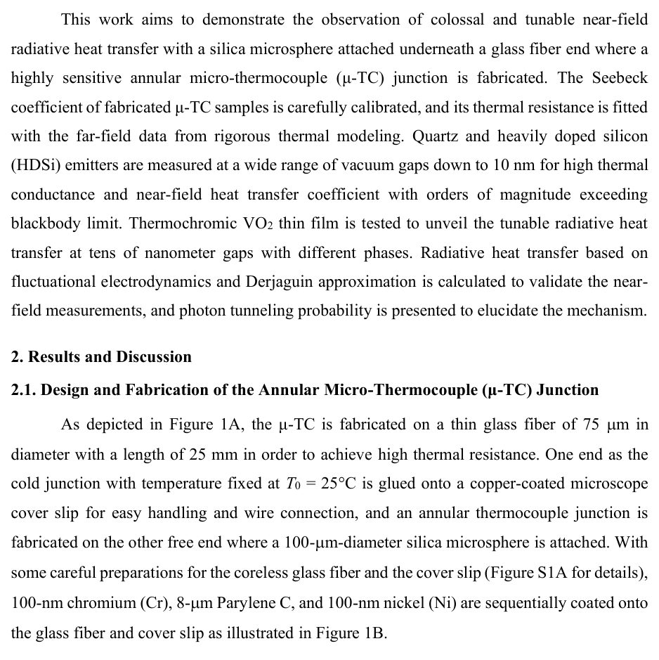
<figcaption class="paper-figure-caption"><b>Fig 1.</b> Figure 1. A. Design and photo of annular micro-thermocouple (μ-TC) junction formed at the end of a thin glass fiber with a silica microsphere attached for near-field thermal radiation measurements. B. Fabrication process for the annular μ-TC junction involving thin film depositions of chrome (Cr), Parylene C, and nickel (Ni).</figcaption>
</figure>
<figure class="paper-figure-card">
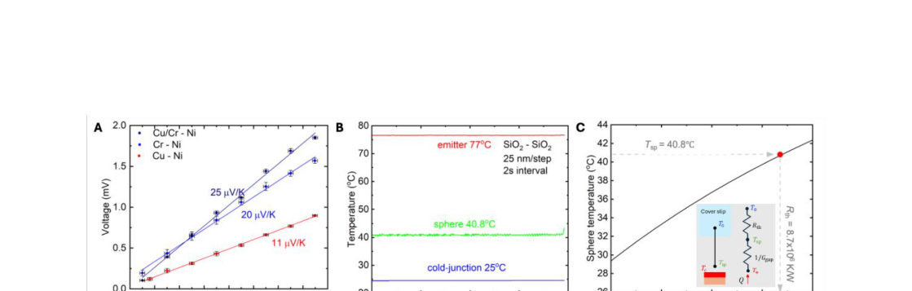
<figcaption class="paper-figure-caption"><b>Fig 2.</b> Figure 2. A. Calibrated Seebeck coefficients of fabricated micro-thermocouple (μ-TC) samples with different junction metal combinations including Cu/Cr – Ni, Cr – Ni, and Cu – Ni. Note that Cu layer is pre-deposited on the cover slip only to enhance the electrical contact of Cr for reliable voltage reading. B. Temperature profiles of the quartz emitter (Te), silica microsphere (Tsp) attached to the μ-TC junction, and cold junction (T0) during the initial approaching from far field about 10 m away at 25 nm/step by a nanopositioner before reaching near field. C. Fitting of the μ-TC thermal resistance based on the microsphere temperature in the far field by comparing the measured value to...</figcaption>
</figure>
<figure class="paper-figure-card">
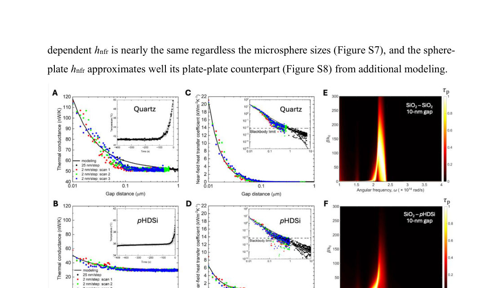
<figcaption class="paper-figure-caption"><b>Fig 3.</b> Figure 3. A.B. Measured overall thermal conductance (G) from multiple scans as a function of gap distance (dgap) from 1 m to 10 nm in comparison with the modeling with contributions from both far-field and near-field thermal radiation for (A) the quartz sample and (B) the p-type heavily-doped silicon (pHDSi) sample both maintained at 350 K. Insets show the microsphere temperature during approaching from far field to near field. C.D. Near-field heat transfer coefficient (hnfr) in relation to the gap distance (dgap) from both measurements and modeling for (C) quartz and (D) pHDSi. Insets present hnfr in the logarithmic scale in the larger vacuum gap distance with reference to the blackbody...</figcaption>
</figure>
<figure class="paper-figure-card">
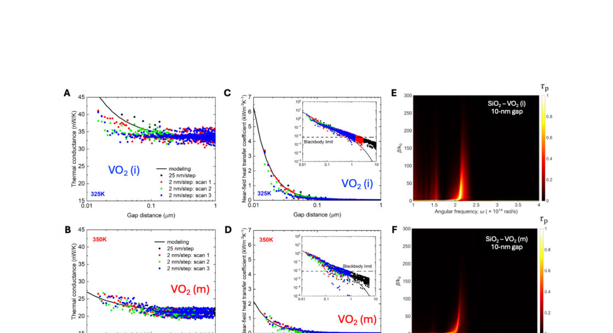
<figcaption class="paper-figure-caption"><b>Fig 4.</b> Figure 4. A.B. Measured overall thermal conductance (G) from multiple scans as a function of gap distance (dgap) from 1 m to 15 nm in comparison with the modeling with contributions from both far-field and near-field thermal radiation for the VO2 thin film in (A) the insulating phase at 325 K and (B) the metallic phase at 350 K. C.D. Near-field heat transfer coefficient (hnfr) in relation to the gap distance (dgap) from both measurements and modeling for (C) the insulating and (D) metallic VO2. Insets present hnfr in the logarithmic scale with reference to the blackbody limit. E.F. Near-field energy transmission coefficient from fluctuational electrodynamics calculation in the plate-plate...</figcaption>
</figure>
</div>
<p><strong>Summary.</strong> This work reports on the experimental observation of colossal and tunable near-field radiative heat transfer using a highly sensitive annular micro-thermocouple junction. By achieving measurements down to 10 nm gaps, the authors demonstrated heat transfer enhancements up to 2600 times the blackbody limit. The study confirms theoretical predictions and shows that the heat transfer can be actively tuned by inducing a phase transition in a VO2 thin film emitter.</p>
<p><strong>Why it may be interesting.</strong> While focused on classical thermal transport, the extreme sensitivity and precise control over energy flux at the nanoscale bridge concepts relevant to quantum thermal conductance and energy transport in mesoscopic systems.</p>
<details>
<summary>Detailed structure</summary>
<p><strong>Main problem.</strong> The research aims to observe and quantify colossal and tunable near-field radiative heat transfer, which significantly exceeds the far-field blackbody limit.</p>
<p><strong>Main result.</strong> The authors experimentally demonstrated near-field heat transfer enhancement up to 2600 times over the blackbody limit at 10-nm gaps using a novel micro-thermocouple junction, and showed tunability using a VO2 phase transition.</p>
<p><strong>Method.</strong> The study uses an annular micro-thermocouple junction attached to a glass fiber to measure heat transfer between a silica microsphere and an emitter, varying the gap distance down to 10 nm.</p>
<p><strong>Model / system.</strong> The physical system involves a microsphere separated by a vacuum gap from an emitter (quartz, doped silicon, or VO2 thin film). The measurements are compared against theoretical models derived from fluctuational electrodynamics and the Derjaguin approximation.</p>
<p><strong>Key observables.</strong> Near-field heat transfer coefficient (h_nfr), enhancement factor over blackbody limit, and the temperature dependence of the heat flux.</p>
<p><strong>Important parameters / regimes.</strong> Gap distance (down to 10 nm), high Seebeck coefficient (25 uV/K), and the material phase transition temperature of VO2.</p>
<p><strong>Assumptions / limitations.</strong> The temperature of the microsphere is assumed uniform due to the large annular junction area; the analysis relies on established theoretical models for radiative heat transfer.</p>
<p><strong>Figures summary.</strong> Figures illustrate the design and fabrication of the micro-thermocouple junction, show calibrated Seebeck coefficients and temperature profiles, and plot the measured heat transfer coefficient versus gap distance for different materials and phases.</p>
<p><strong>Paper structure.</strong> The paper introduces the challenge of measuring near-field heat transfer, details the novel annular micro-thermocouple setup, presents measurements showing colossal enhancement for various materials (quartz, Si), and finally demonstrates tunable control using the VO2 phase transition, comparing all results to theoretical modeling.</p>
</details>
<details>
<summary>Abstract</summary>
<p>Near-field radiative heat transfer between two objects has been theoretically predicted and experimentally demonstrated to exceed far-field blackbody limit across nanoscale vacuum gap distance enabled by evanescent surface waves coupling, while significant enhancement by more than 100 times usually requires sub-50-nm vacuum gaps around room temperature. This is challenging for parallel-plate configuration with millimeter sample sizes due to intrinsic wafer bow and contaminant particles. Sphere-plate configuration with a microsphere attached to bimaterial cantilevers or micro-thermocouple tips has been used to experimentally demonstrate near-field radiative heat transfer down to 30-nm gaps, but it is much less developed because of the challenges in the sophisticated sensor fabrication, low sensitivity and weak signals. In this work, we overcome these challenges by an annular micro-thermocouple junction fabricated at the end of a glass fiber with straightforward thin-film deposition to achieve high measurement accuracy with large Seebeck coefficient 25 uV/K and thermal resistance 8.7e6 K/W. With a silica microsphere attached underneath the micro-thermocouple junction, we report experimental observation of colossal near-field radiation heat transfer over blackbody limit down to 10-nm gap up to 2600 times with quartz and 900 times with doped silicon. Upon phase transition of VO2 thin film emitter, tunable near-field heat transfer up to 430-fold enhancement is experimentally demonstrated at 15-nm gap with 64% reduction. Experimental data agrees well with rigorous modeling based on fluctuational electrodynamics and Derjaguin approximation, and underlying mechanism is understood by energy transmission calculations. The results will advance the experimental study and fundamental understanding of energy transport at nanoscale gaps.</p>
</details>
<p><sub><a href="#top">↑ back to top</a></sub></p>

<p><a id="paper-2609.35582"></a></p>
<h3 id="periodic-trends-and-a-physics-based-multistage-search-for-high-math2343math-hydride-superconductors"><a href="http://arxiv.org/abs/2609.35582v1">Periodic Trends and a Physics-Based Multistage Search for High-$T_c$ Hydride Superconductors</a></h3>
<p><strong>Authors:</strong> Tianran Chen, Taner Yildirim<br>
<strong>Type:</strong> theory · <strong>Category:</strong> strongly correlated electrons · <strong>PDF:</strong> <a href="https://arxiv.org/pdf/2609.35582v1">https://arxiv.org/pdf/2609.35582v1</a><br>
<strong>Analysis basis:</strong> full PDF text, analyzed in chunks</p>
<div class="figure-strip-hint">↔ Scroll figures horizontally</div>
<div class="paper-figures-scroll">
<figure class="paper-figure-card">
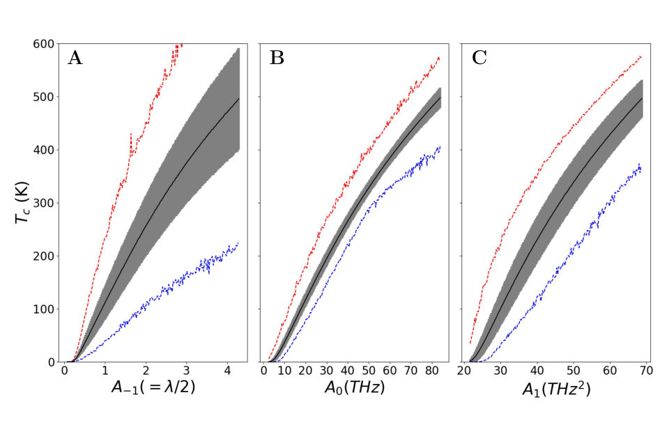
<figcaption class="paper-figure-caption"><b>Fig 1.</b> Figure 1: Mean, standard error, maximum, and minimum values of Tc as functions of the spectral moment An, obtained from randomly generated α2F(ω) spectra: (A) n = −1, (B) n = 0, and (C) n = 1. Gray shaded regions indicate the standard errors, and red and blue dashed lines denote the maximum and minimum values of Tc, respectively.</figcaption>
</figure>
<figure class="paper-figure-card">
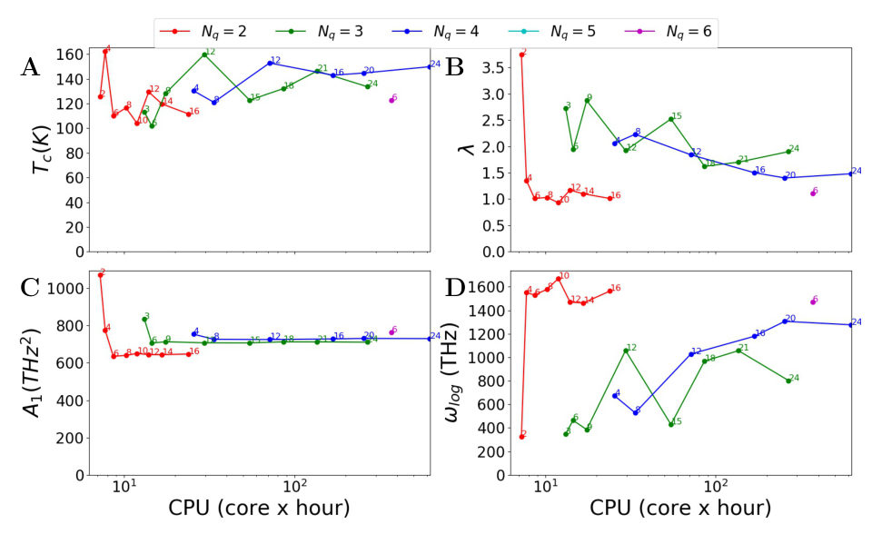
<figcaption class="paper-figure-caption"><b>Fig 2.</b> Figure 2: Tc, A1, λ, and ωlog for Fm¯3m H3S at 200 GPa as functions of computational cost. Red, green, blue, and cyan curves correspond to Nq = 2, 3, 4, and 6, respectively. The labels at the data points give Nk. In this convergence test, A1 approaches its converged value substantially faster than Tc, λ, and ωlog.</figcaption>
</figure>
<figure class="paper-figure-card">
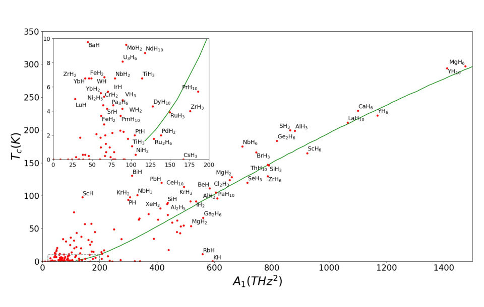
<figcaption class="paper-figure-caption"><b>Fig 3.</b> Figure 3: Calculated Tc and A1 values for dynamically stable cubic XmHn systems at 200 GPa. The inset enlarges the region of low Tc and A1. The green curve shows ⟨Tc(A1)⟩, obtained from the random nonnegative α2F(ω) spectra described in the text.</figcaption>
</figure>
<figure class="paper-figure-card">
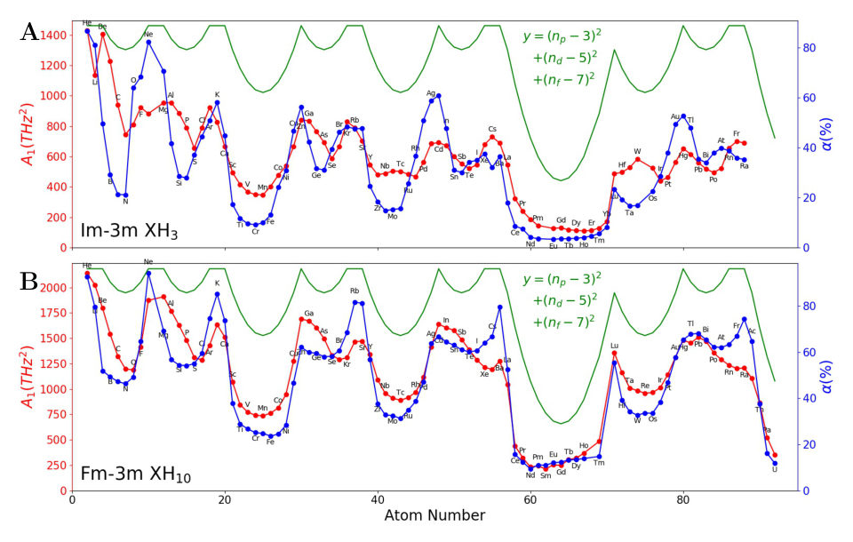
<figcaption class="paper-figure-caption"><b>Fig 4.</b> Figure 4: Calculated A1 and hydrogen contribution at the Fermi level, α, for (A) Im¯3m XH3 and (B) Fm¯3m XH10 as functions of the atomic number Z of X. Red and blue curves denote A1 and α, respectively. The green curve shows the empirical orbital-filling function y(Z) = (np −3)2 + (nd −5)2 + (nf −7)2, included to guide the eye.</figcaption>
</figure>
<figure class="paper-figure-card">
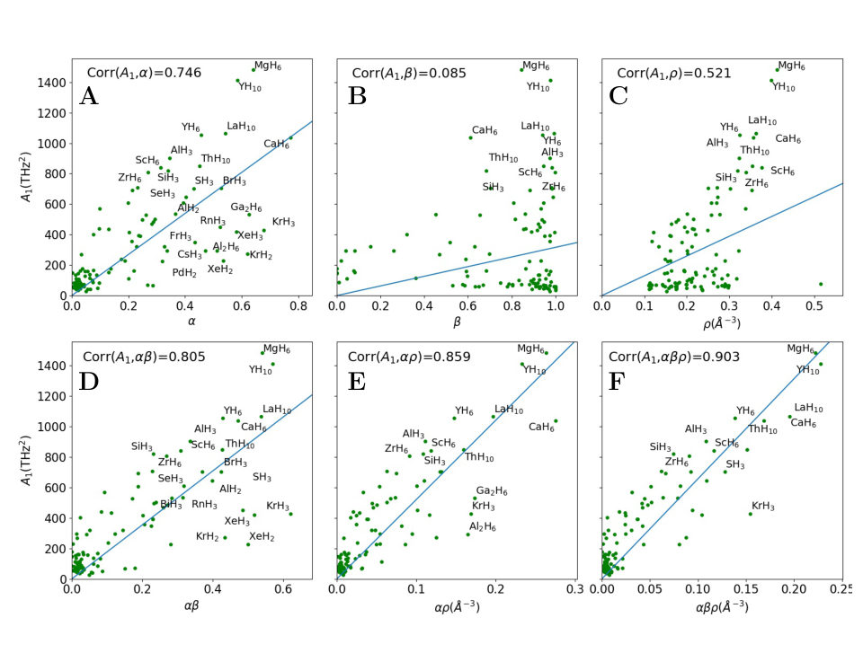
<figcaption class="paper-figure-caption"><b>Fig 5.</b> Figure 5: Correlations of A1 with (A) α, (B) β, (C) ρ, (D) αβ, (E) αρ, and (F) αβρ for the dynamically stable cubic systems included in the descriptor analysis. Blue lines are linear least-squares fits, and the corresponding Pearson correlation coefficients are shown in each panel.</figcaption>
</figure>
</div>
<p><strong>Summary.</strong> This work presents a novel, computationally efficient, multi-stage workflow to screen for high-temperature superconducting hydrides. By introducing the spectral moment $A_1$ and correlating it with electronic descriptors ($\alphaeta
ho$), the authors successfully prioritize thousands of candidate structures. This framework significantly accelerates the search for novel superconducting materials by guiding expensive first-principles calculations.</p>
<p><strong>Why it may be interesting.</strong> While focused on solid-state superconductivity, the methodology of creating a multi-stage, physics-informed screening pipeline using low-cost electronic descriptors ($\alphaeta
ho$) to guide expensive quantum calculations is highly relevant to developing predictive models in strongly correlated or complex quantum materials.</p>
<details>
<summary>Detailed structure</summary>
<p><strong>Main problem.</strong> The primary challenge is developing an efficient, interpretable, and scalable workflow to prioritize candidate high-temperature superconducting hydrides, as full first-principles electron-phonon-coupling (EPC) calculations are computationally prohibitive.</p>
<p><strong>Main result.</strong> The authors developed a three-stage search framework that successfully identified promising candidates, notably predicting a high $T_c$ for $   ext{Pm}ar{3}m  ext{NaH}_6$ down to 50 GPa, demonstrating the utility of the screening descriptor.</p>
<p><strong>Method.</strong> The workflow combines multiobjective structural screening (using USPEX), harmonic-phonon stability filtering, and coarse Density-Functional Perturbation Theory (DFPT) EPC calculations. A key diagnostic introduced is the spectral moment $A_1$.</p>
<p><strong>Model / system.</strong> The study focuses on hydrogen-rich materials, specifically cubic binary hydride prototypes ($X_mH_n$) under high pressure (50 GPa to 200 GPa). The physics is governed by electron-phonon coupling mechanisms.</p>
<p><strong>Key observables.</strong> Superconducting critical temperature ($T_c$), spectral moment ($A_1$), H-1s density-of-states fraction at the Fermi level ($\alpha$), projected Fermi-surface descriptor ($eta$), and atomic number density ($
ho$).</p>
<p><strong>Important parameters / regimes.</strong> High pressures (50 GPa, 200 GPa); the descriptor relation $A_1 \approx h\alphaeta
ho$.</p>
<p><strong>Assumptions / limitations.</strong> The descriptor $A_1$ is used for prioritization and correlation, not as a universal $T_c$ predictor; the descriptor relation is calibrated for specific cubic hydride systems.</p>
<p><strong>Figures summary.</strong> Figures illustrate the convergence of various diagnostic measures ($T_c, A_1, \lambda, \omega\log$) versus computational cost, show correlations between $T_c$ and $A_1$, and map out Pareto fronts for structural optimization.</p>
<p><strong>Paper structure.</strong> The paper establishes the computational bottleneck, introduces the diagnostic $A_1$ as a superior screening measure, derives the empirical descriptor relation $A_1 \approx h\alphaeta
ho$, and applies this framework through a three-stage evolutionary search to identify and predict the properties of stable, high-$T_c$ hydride candidates.</p>
</details>
<details>
<summary>Abstract</summary>
<p>Hydrogen-rich materials under pressure are candidates for conventional phonon-mediated superconductivity, but first-principles electron--phonon-coupling (EPC) calculations are computationally demanding. We develop an interpretable multistage workflow for prioritizing binary hydride superconductors before full EPC calculations. Using controlled cubic $X_m$H$_n$ prototypes at 200~GPa, we introduce the spectral moment $A_1$ as an intermediate measure of electron--phonon perturbation strength. In its linewidth-based construction, $A_1$ remains finite as harmonic phonons soften, allowing related structures with imaginary harmonic modes to be screened; it does not establish superconductivity or physical realizability for unstable structures. For dynamically stable cubic systems, $A_1$ correlates strongly with the H-$1s$ density-of-states fraction at the Fermi level, $α$, a projected Fermi-surface descriptor, $β$, and atomic number density, $ρ$. These trends are summarized heuristically by $A_1\approx hαβρ$, where $h$ is framework- and pressure-dependent; the descriptor is used for ranking, not as a universal $T_c$ predictor.   We incorporate $αβρ$ and enthalpic competitiveness into a three-stage evolutionary search comprising multiobjective structural screening, harmonic-phonon stability filtering, and coarse density-functional perturbation-theory (DFPT) EPC calculations. Application to more than 100,000 binary hydride structures at 50 and 200~GPa identifies candidates and prioritizes NaH$_6$ structural families. Higher-accuracy calculations show that $Pm\bar{3}m$ NaH$_6$ is dynamically stable down to 50~GPa and has a harmonic Allen--Dynes estimate of $T_c\approx230$~K. The framework combines electronic descriptors with progressively more expensive stability and EPC calculations for scalable hydride exploration.</p>
</details>
<p><sub><a href="#top">↑ back to top</a></sub></p>

<p><a id="paper-2609.32575"></a></p>
<h3 id="phonon-angular-momentum-transfer-torque"><a href="http://arxiv.org/abs/2609.32575v1">Phonon angular momentum transfer torque</a></h3>
<p><strong>Authors:</strong> Verena Brehm, Daniel A. Bustamante Lopez, Shu Zhang, Dominik Juraschek<br>
<strong>Type:</strong> theory · <strong>Category:</strong> other · <strong>PDF:</strong> <a href="https://arxiv.org/pdf/2609.32575v1">https://arxiv.org/pdf/2609.32575v1</a><br>
<strong>Analysis basis:</strong> full PDF text, analyzed in chunks</p>
<div class="figure-strip-hint">↔ Scroll figures horizontally</div>
<div class="paper-figures-scroll">
<figure class="paper-figure-card">
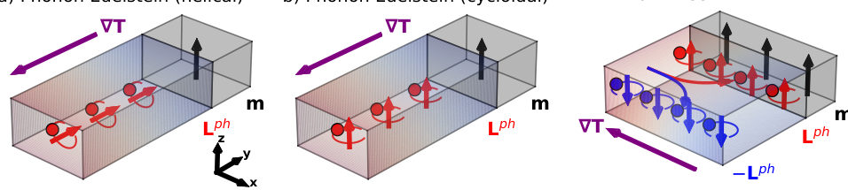
<figcaption class="paper-figure-caption"><b>Fig 1.</b> FIG. 1. Geometries for PAMTT. A temperature gradient, indicated by the red-to-blue color gradient, generates a PAM accumulation or current according to (a, b) the phonon Edelstein effect [7, 8] and (c) the phonon angular momentum Hall effect [9, 10]. At the interface, the local PAM Lph = Llph exerts a torque on the magnetization m in the adjacent magnet. For the temperature-gradient directions shown here, the PAM is either perpendicular or parallel to the magnetization.</figcaption>
</figure>
<figure class="paper-figure-card">
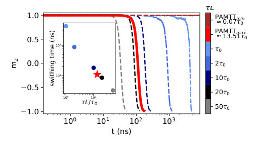
<figcaption class="paper-figure-caption"><b>Fig 2.</b> FIG. 2. Switching of magnetization with PAMTT in a macrospin model. The main plot shows the magnetization component mz. Switching times are summarized in the in- set. For −lph ∥m and βR = 1, Eq. (B1) gives the threshold for compensating the Gilbert damping, τ0 = −2κeldzγel</figcaption>
</figure>
</div>
<p><strong>Summary.</strong> This paper develops a theoretical framework to describe how angular momentum stored in lattice vibrations (phonons) can exert a torque on the magnetization of a magnetic material. By quantifying the Phonon Angular Momentum Transfer Torque (PAMTT), the authors predict measurable effects, including shifts in ferromagnetic resonance frequencies and the ability to drive magnetization reversal on fast timescales.</p>
<p><strong>Why it may be interesting.</strong> This work bridges lattice dynamics (phonons) with magnetism, providing a mechanism (PAMTT) to control magnetic switching and resonance frequencies using thermal gradients, which is relevant to understanding energy dissipation and control in spintronics.</p>
<details>
<summary>Detailed structure</summary>
<p><strong>Main problem.</strong> The paper introduces and quantifies the transfer of angular momentum from lattice vibrations (phonons) to magnetic order via the Phonon Angular Momentum Transfer Torque (PAMTT). It explores thermal routes for generating this phonon angular momentum.</p>
<p><strong>Main result.</strong> PAMTT can produce measurable ferromagnetic-resonance frequency shifts and possesses the potential to drive magnetization reversal on nanosecond timescales in magnetic materials.</p>
<p><strong>Method.</strong> The study uses theoretical formulation by adapting the Landau-Lifshitz-Gilbert-Slonczewski equation to incorporate the torque term derived from phonon angular momentum accumulation.</p>
<p><strong>Model / system.</strong> The system involves a magnetic layer whose dynamics are modeled by a macrospin description governed by the LLG equation. The coupling mechanism is the PAMTT, generated by phonon sources like the Phonon Edelstein effect or temperature gradients.</p>
<p><strong>Key observables.</strong> Ferromagnetic-resonance (FMR) frequency shifts ($\Delta\omega$), magnetization switching time, and the magnitude of the torque ($    au_L$).</p>
<p><strong>Important parameters / regimes.</strong> The strength of the PAMTT ($    au_L$), the anisotropy constant ($d_z$), and the coupling coefficients ($eta_P, eta_R$).</p>
<p><strong>Assumptions / limitations.</strong> The analysis simplifies the dynamics by assuming $\alpha=0$ and $eta_R=0$ for the core LLG derivation, and it uses order-of-magnitude estimates for phonon accumulation.</p>
<p><strong>Figures summary.</strong> Figure 1 illustrates the geometries for PAMTT, including the Phonon Edelstein effect. Figure 2 (mentioned) shows the dependence of magnetization switching times on the strength of the PAMTT.</p>
<p><strong>Paper structure.</strong> The paper first introduces the concept of PAMTT and the thermal generation mechanisms (Edelstein, temperature gradient). It then develops the theoretical framework by modifying the LLG equation and presents order-of-magnitude estimates. Finally, it uses numerical simulations to predict measurable effects like FMR shifts and switching dynamics.</p>
</details>
<details>
<summary>Abstract</summary>
<p>Angular momentum in solids is carried by (quasi)particles such as magnons, plasmons, and phonons, and coupling between these reservoirs enables diverse hybrid phenomena. Here, we introduce the transfer of angular momentum from lattice vibrations to magnetic order through the phonon angular momentum transfer torque (PAMTT), generated by a polarized phonon bath. We identify thermal routes for generating phonon angular momentum: a phonon Edelstein accumulation in noncentrosymmetric crystals and temperature-gradient-induced PAM currents with longitudinal Seebeck-like and transverse Hall components. Using realistic order-of-magnitude estimates, we find that PAMTT could produce measurable ferromagnetic-resonance frequency shifts and, for favorable interfacial coupling, drive magnetization reversal on nanosecond timescales.</p>
</details>
<p><sub><a href="#top">↑ back to top</a></sub></p>

<p><a id="paper-2609.32974"></a></p>
<h3 id="physics-based-logarithmic-description-of-electrostatic-field-enhancement-in-hemisphere-on-cylindrical-post-structures-for-high-field-applications"><a href="http://arxiv.org/abs/2609.32974v1">Physics-based logarithmic description of electrostatic field enhancement in hemisphere-on-cylindrical-post structures for high-field applications</a></h3>
<p><strong>Authors:</strong> Thiago A. de Assis, Fernando F. Dall-Agnol, Richard G. Forbes<br>
<strong>Type:</strong> theory · <strong>Category:</strong> other · <strong>PDF:</strong> <a href="https://arxiv.org/pdf/2609.32974v1">https://arxiv.org/pdf/2609.32974v1</a><br>
<strong>Analysis basis:</strong> full PDF text, analyzed in chunks</p>
<div class="figure-strip-hint">↔ Scroll figures horizontally</div>
<div class="paper-figures-scroll">
<figure class="paper-figure-card">
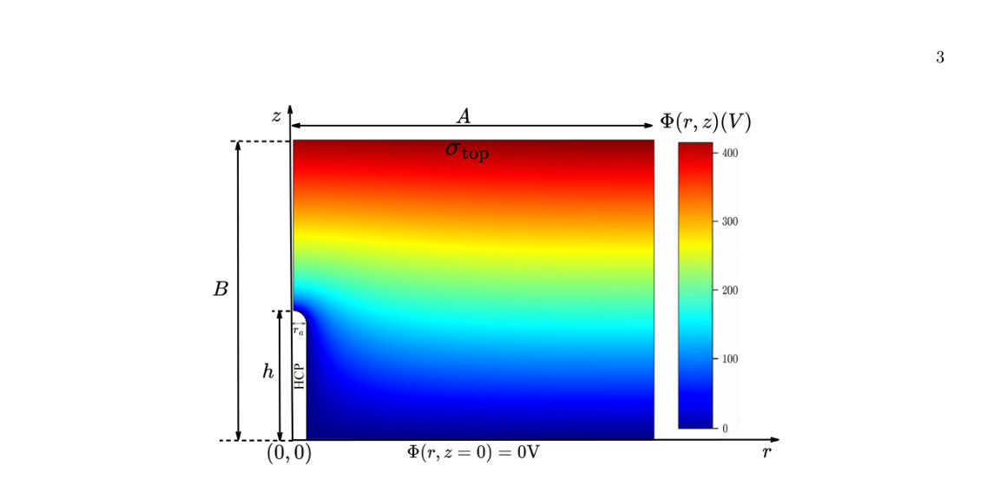
<figcaption class="paper-figure-caption"><b>Fig 1.</b> FIG. 1. Axisymmetric finite-element simulation domain used to compute the electrostatic potential Φ(r, z) and the apex field enhancement factor for the hemisphere-on-cylindrical-post (HCP) model in the large-gap regime. The HCP emitter, of height h and apex radius ra, is mounted on a grounded conducting plane. The computational domain is bounded radially at r = A and vertically at z = B, with B ≫h. A Neumann boundary condition corresponding to a uniform surface charge density σtop = −ε0Eback is imposed at the top boundary, generating the background electrostatic field Eback. The colour map shows the electrostatic potential distribution obtained from the axisymmetric finite-element solution...</figcaption>
</figure>
<figure class="paper-figure-card">
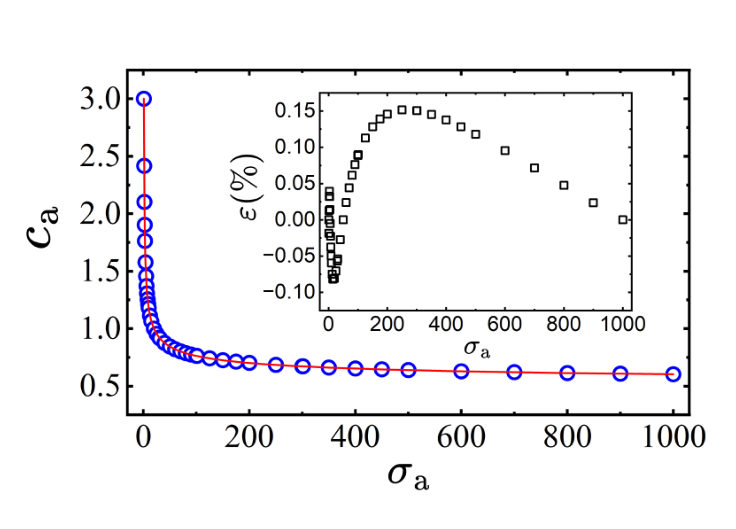
<figcaption class="paper-figure-caption"><b>Fig 2.</b> FIG. 2. Geometric coefficient ca(σa) = γa/σa as a function of the apex sharpness ratio σa = h/ra for the HCP model in the large-gap regime. Blue circles represent high-precision finite-element results obtained using the MDD technique, with an estimated relative numerical uncertainty in γa of order 10−5 %. The numerical data show a smooth and monotonic decrease of ca from the exact hemispherical value ca(1) = 3 toward a regime of progressively weaker variation as σa increases. The solid red curve is the least-squares fit of the analytical expression defined by Eqs. (6) and (10) with fitted parameters as discussed in the text. The inset shows the relative percentage deviation ε(σa) between...</figcaption>
</figure>
<figure class="paper-figure-card">
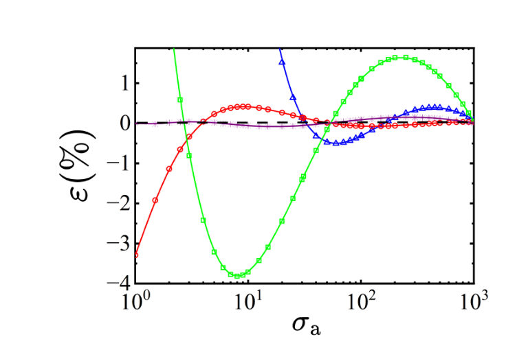
<figcaption class="paper-figure-caption"><b>Fig 3.</b> FIG. 3. Relative percentage deviation ε(σa) between several fitting expressions and the high-precision finite-element reference results for the apex FEF shown in Fig.2. The horizontal dashed line indicates zero relative deviation. Green squares correspond to the formula reported in Ref. [27]; blue triangles to the expression proposed in Ref. [36]; red circles to the approximation given in [6]; and purple crosses to the present geometrically constrained formulation. The previously published power-type expressions exhibit systematic oscillatory deviations, reflecting their inability to reproduce the slowly varying large-σa behavior of ca(σa). In contrast, the new expression maintains |ε|...</figcaption>
</figure>
<figure class="paper-figure-card">
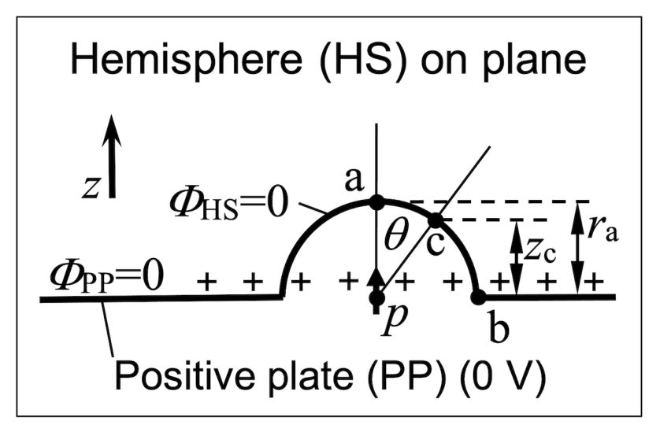
<figcaption class="paper-figure-caption"><b>Fig 4.</b> FIG. 4. To illustrate the “hemisphere-on-a-plane” field-enhancement model, in the case where the emitter is charged positively. For detailed explanation of the symbols used to label the diagram, see text.</figcaption>
</figure>
<figure class="paper-figure-card">
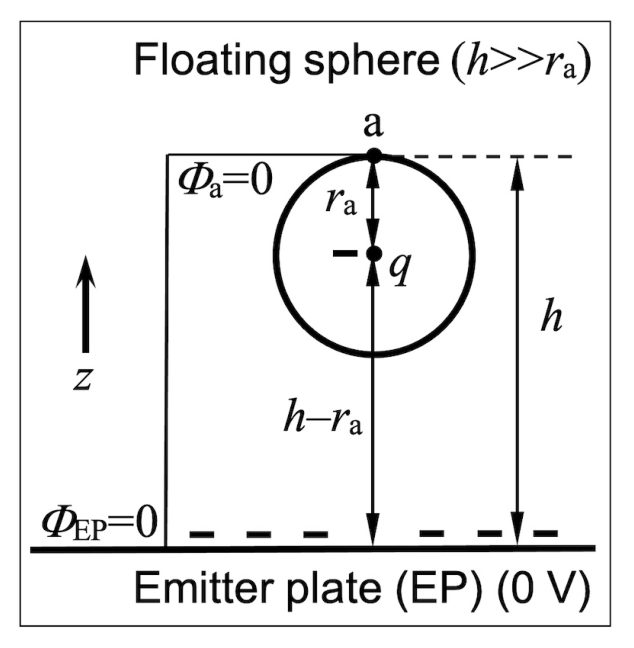
<figcaption class="paper-figure-caption"><b>Fig 5.</b> FIG. 5. To illustrate the “floating sphere at emitter plate potential” field-enhancement model, in the case where the emitter is charged negatively. The diagram is not to scale, particularly vertically. For explanation of the symbols used to label the diagram, see text.</figcaption>
</figure>
</div>
<p><strong>Summary.</strong> This paper presents a new, highly accurate analytical approximation for the electrostatic field enhancement factor in the hemisphere-on-cylindrical-post (HCP) structure. By deriving a compact formula with a logarithmic structure, the authors significantly improve upon previous power-law approximations. This advancement is crucial for engineering applications requiring precise knowledge of high-field regions, such as lightning protection and particle accelerator design.</p>
<p><strong>Why it may be interesting.</strong> While the physics is classical electrostatics, the rigorous mathematical development of a highly accurate, non-trivial analytical approximation (logarithmic form) for a complex physical system's limiting behavior is mathematically interesting.</p>
<details>
<summary>Detailed structure</summary>
<p><strong>Main problem.</strong> The paper addresses the challenge of accurately modeling the electrostatic (ES) field enhancement factor (FEF) at the apex of sharp conducting structures.</p>
<p><strong>Main result.</strong> The authors developed a new, compact analytical approximation for the FEF that has a logarithmic structure, achieving a maximum error of only 0.15% when compared to finite-element simulations.</p>
<p><strong>Method.</strong> The methodology involves deriving a new analytical formula for the apex sharpness coefficient, contrasting with older power-law approximations, and validating it against high-precision numerical simulations.</p>
<p><strong>Model / system.</strong> The canonical geometry studied is the hemisphere-on-cylindrical-post (HCP) model, which is relevant for applications like lightning protection and electrical breakdown in vacuum.</p>
<p><strong>Key observables.</strong> Apex field enhancement factor ($\gamma_a$), defined as the ratio of the local ES field at the apex to the background ES field.</p>
<p><strong>Important parameters / regimes.</strong> Apex sharpness ratio ($\sigma_a = h/r_a$), which characterizes the geometry of the post.</p>
<p><strong>Assumptions / limitations.</strong> The analysis focuses on the negative-field situation, and the derived formula is validated for the range $1 \le \sigma_a \le 1000$.</p>
<p><strong>Figures summary.</strong> Figure 1 illustrates the axisymmetric finite-element simulation domain for the HCP model. Figure 2 compares the calculated coefficient $c_a(\sigma_a)$ against FEM results and the new analytical fit. Figure 3 compares the new formula against older, less accurate power-type fitting formulas.</p>
<p><strong>Paper structure.</strong> The paper establishes the physical problem and the HCP model, develops the new logarithmic analytical approximation for the field enhancement factor, validates this formula against detailed finite-element simulations, and compares its accuracy against historical approximations.</p>
</details>
<details>
<summary>Abstract</summary>
<p>Electrostatic (ES) field enhancement at sharp conducting structures plays a central role in lightning protection, corona discharge, electrical breakdown in vacuum (for example in particle accelerators), and more generally in technological applications of field electron emitters. A canonical geometry for studying this ES effect is the hemisphere-on-cylindrical-post (HCP) model, in the regime where the structure stands on a planar conductor of large lateral extent, and a large gap exists between the structure and the counter-electrode. A parameter of major interest is the apex field enhancement factor (AFEF) (apex-ES-field/background-ES-field). For this (and other) structures, a formula for the AFEF can be written in the form AFEF = ASC x ASR, where the apex sharpness ratio (ASR) is given by the ratio (post-height/apex-radius-of-curvature), and the apex sharpness coefficient (ASC) depends on the post shape. For the HCP model, no exact analytical formulas for the ASC or the AFEF are currently known. (Quite possibly none exist.) This paper develops a compact analytical approximation for the ASC and hence for the AFEF. This compact formula has a logarithmic-style structure, rather than the power-style structure used in previous approximations. When compared with precise finite-element analyses of the HCP model, over the computationally accessible range 1 to 1000 for the ASR, this logarithmic-style formula has a maximum error-magnitude of 0.15 percent, which is significantly better than older approximations.</p>
</details>
<p><sub><a href="#top">↑ back to top</a></sub></p>

<p><a id="paper-2609.35373"></a></p>
<h3 id="plasmon-modes-in-three-dimensional-nodal-ring-semimetals-tilt-and-gap-effects"><a href="http://arxiv.org/abs/2609.35373v1">Plasmon modes in three-dimensional nodal-ring semimetals: tilt and gap effects</a></h3>
<p><strong>Authors:</strong> Ipsita Mandal<br>
<strong>Type:</strong> theory · <strong>Category:</strong> other · <strong>PDF:</strong> <a href="https://arxiv.org/pdf/2609.35373v1">https://arxiv.org/pdf/2609.35373v1</a><br>
<strong>Analysis basis:</strong> full PDF text, analyzed in chunks</p>
<div class="figure-strip-hint">↔ Scroll figures horizontally</div>
<div class="paper-figures-scroll">
<figure class="paper-figure-card">
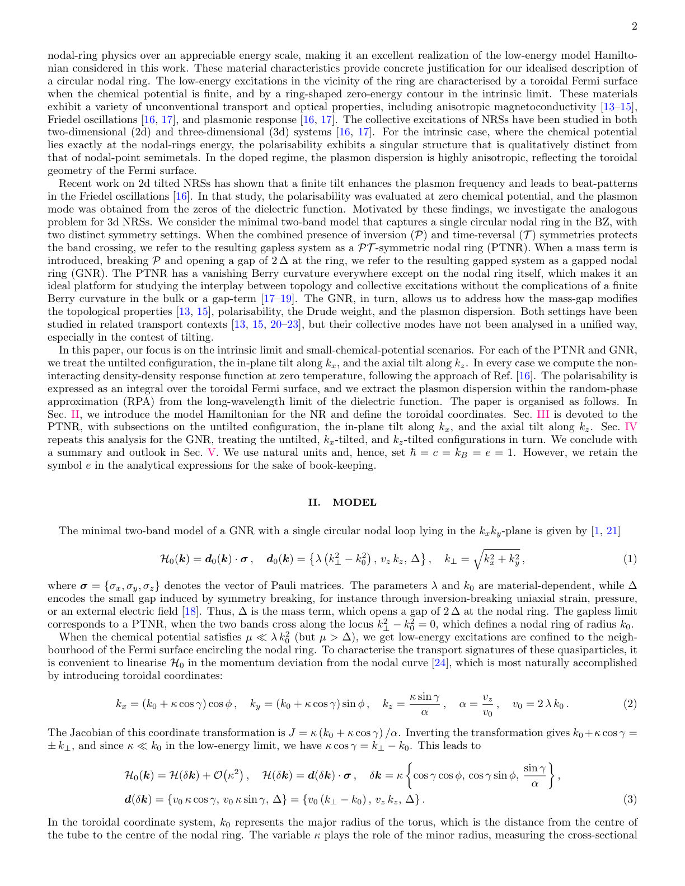
<figcaption class="paper-figure-caption"><b>Fig 1.</b> Low-resolution page preview, page 2</figcaption>
</figure>
<figure class="paper-figure-card">
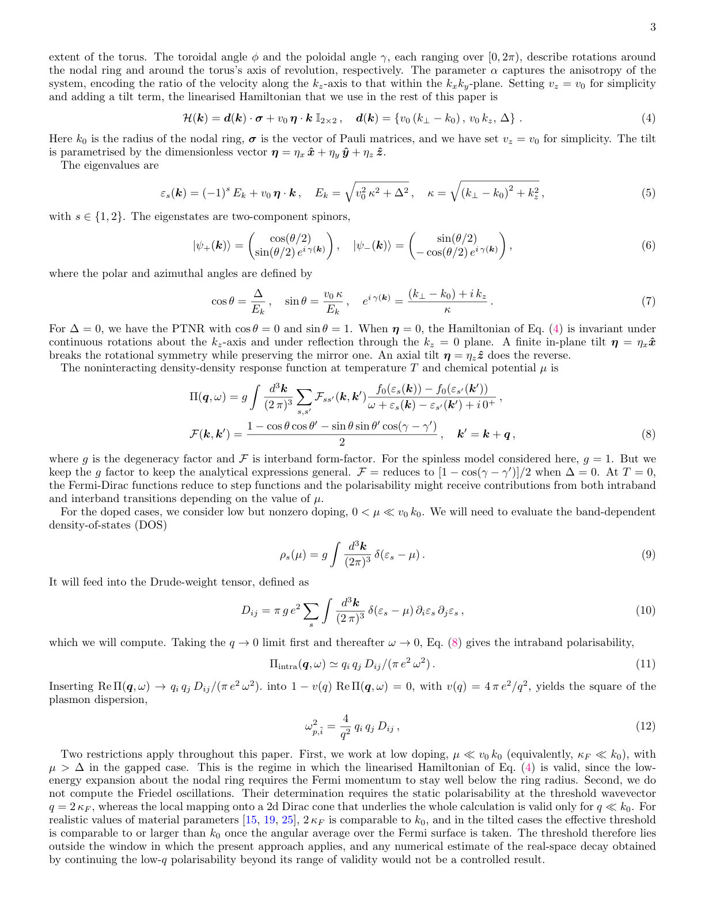
<figcaption class="paper-figure-caption"><b>Fig 2.</b> Low-resolution page preview, page 3</figcaption>
</figure>
<figure class="paper-figure-card">
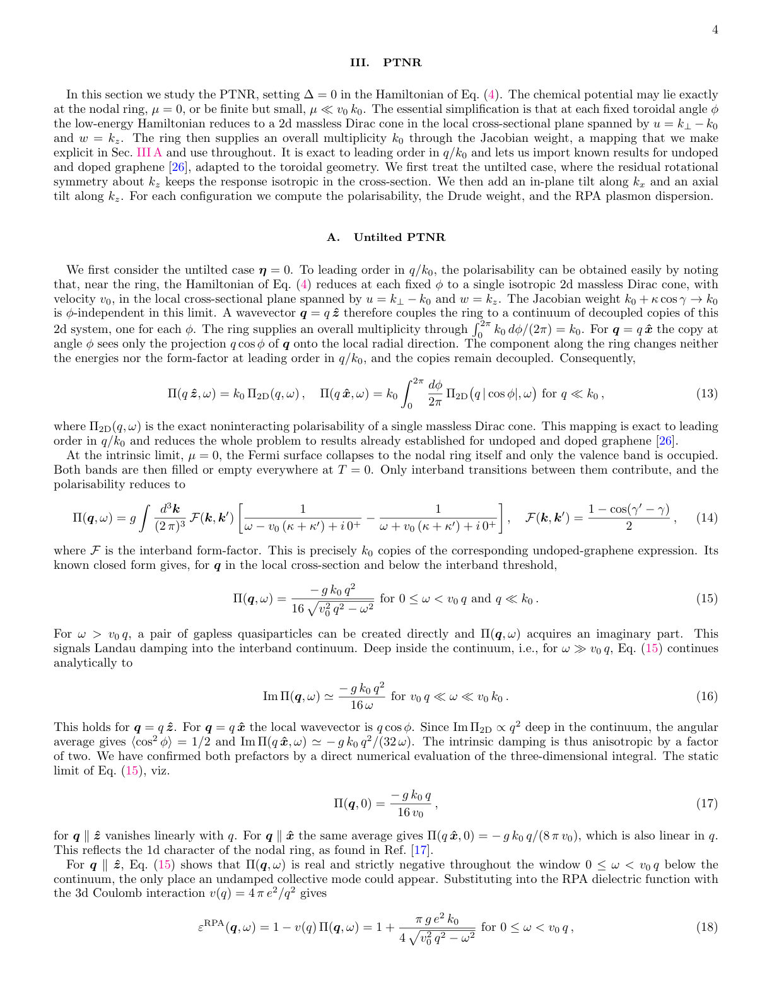
<figcaption class="paper-figure-caption"><b>Fig 3.</b> Low-resolution page preview, page 4</figcaption>
</figure>
<figure class="paper-figure-card">
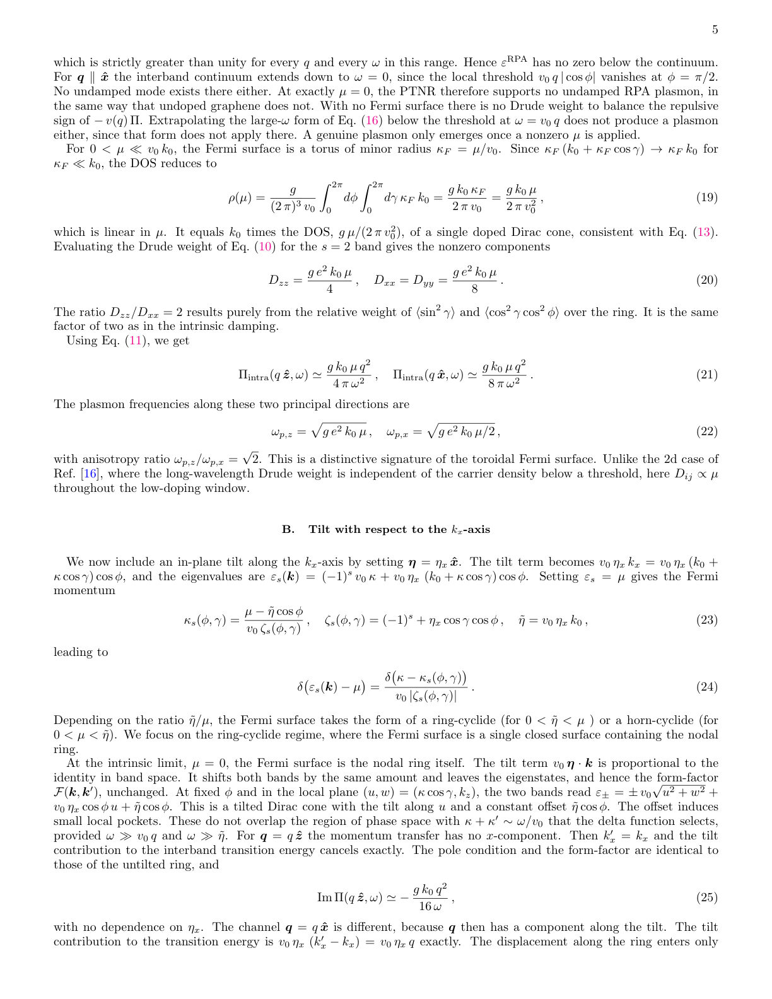
<figcaption class="paper-figure-caption"><b>Fig 4.</b> Low-resolution page preview, page 5</figcaption>
</figure>
<figure class="paper-figure-card">
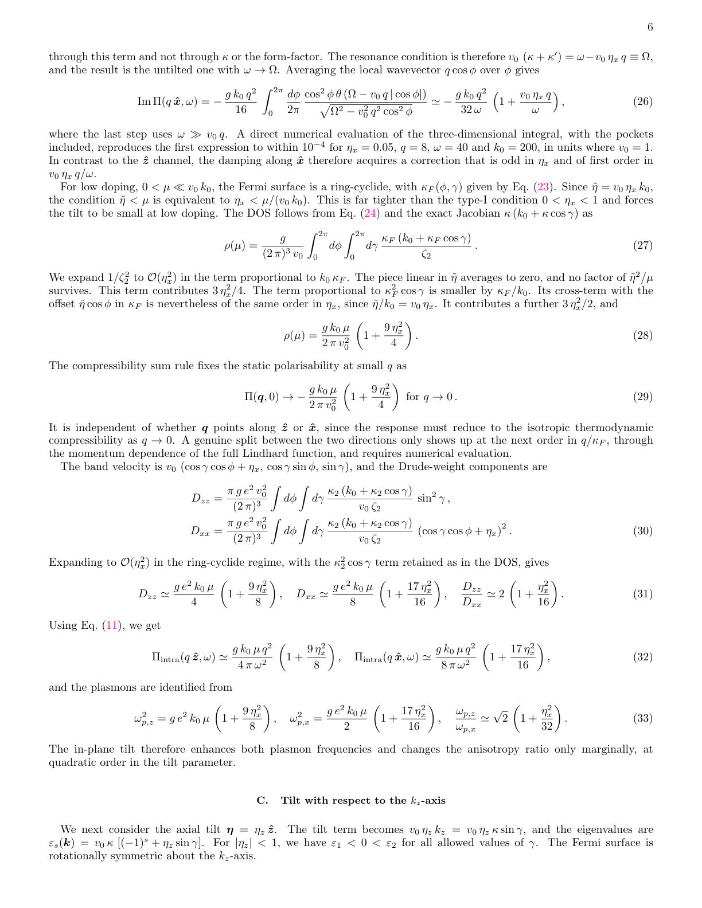
<figcaption class="paper-figure-caption"><b>Fig 5.</b> Low-resolution page preview, page 6</figcaption>
</figure>
</div>
<p><strong>Summary.</strong> This theoretical work analyzes plasmon modes in 3D nodal-ring semimetals, examining the impact of band tilting and an intrinsic mass-gap. Using the Random-Phase Approximation, the authors derive the plasmon dispersion and Drude weights for both gapless and gapped scenarios. The results provide a systematic comparison, yielding closed-form expressions particularly for the complex partially-gapped regimes.</p>
<p><strong>Why it may be interesting.</strong> The detailed analysis of collective excitations (plasmons) in topological/semimetallic materials provides insights into charge dynamics that can be relevant for understanding plasmonics in engineered quantum systems.</p>
<details>
<summary>Detailed structure</summary>
<p><strong>Main problem.</strong> The study investigates the plasmon modes in three-dimensional nodal-ring semimetals, focusing on how the introduction of band tilting and a mass-gap affects the electronic response.</p>
<p><strong>Main result.</strong> The authors derive closed-form results for the density of states and Drude weights in partially-gapped regimes, systematically comparing the behavior between gapless and gapped nodal-ring systems.</p>
<p><strong>Method.</strong> Calculations are performed using the Random-Phase Approximation (RPA) on the non-interacting density-density response function, analyzing the low-doping limit.</p>
<p><strong>Model / system.</strong> The system is a 3D nodal-ring semimetal, modeled using a low-energy effective Hamiltonian that can be analyzed in terms of a gapless (PTNR) or gapped (GNR) structure.</p>
<p><strong>Key observables.</strong> Plasmon dispersion ($\omega_p$), non-interacting density-density response function ($\Pi$), and the Drude weight tensor ($D_{ij}$).</p>
<p><strong>Important parameters / regimes.</strong> Tilt parameters ($\eta_x, \eta_z$), mass-gap ($\Delta$), and chemical potential ($\mu$), analyzed across gapless, gapped, and partially-gapped regimes.</p>
<p><strong>Assumptions / limitations.</strong> The analysis is restricted to the low-doping regime where the linearized Hamiltonian is valid, and it uses the Random-Phase Approximation.</p>
<p><strong>Paper structure.</strong> The paper systematically analyzes the plasmon response by first establishing the low-energy Hamiltonian, then calculating the response function and Drude weights for the untilted case, followed by detailed investigations of the in-plane and axial tilt effects, culminating in closed-form results for the partially-gapped regime.</p>
</details>
<details>
<summary>Abstract</summary>
<p>We study plasmon modes in three-dimensional nodal-ring semimetals, considering both the gapless $\mathcal{PT}$-symmetric nodal ring (PTNR) and its gapped counterpart (GNR). Working in the low-doping regime where the linearised Hamiltonian is valid, we compute the non-interacting density-density response function, the Drude weight, and the plasmon dispersion within the random-phase approximation. We treat the untilted configuration as well as in-plane tilt along $k_x$ and axial tilt along $k_z$. For the in-plane tilted GNR, a strong-enough tilt or a small enough chemical potential pushes part of the ring into a partially-gapped regime. Only part of the Fermi surface survives there. We obtain closed-form results for this regime in two limits: a small tilt and a small gap. The small-gap limit produces a fractional-power correction to the Drude weight and the plasmon frequency. For the axially-tilted GNR, the partially-gapped window has a double-valued local Fermi surface for which we obtain the density-of-states and the Drude weights in closed forms. We analyse how the tilt and the mass-gap affect the plasmon dispersion and the anisotropy between axial and in-plane directions. Our results provide a systematic comparison between the gapless and gapped cases and between different tilt directions.</p>
</details>
<p><sub><a href="#top">↑ back to top</a></sub></p>
</details>

<hr>
<p>
<a href="index.html">← Index</a>
 · <a href="papers_12.html">← Previous</a>
</p>
<hr>

</body>
</html>
